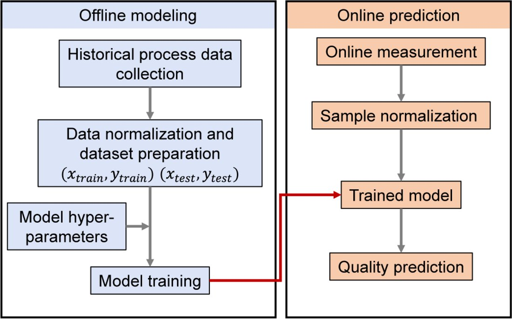
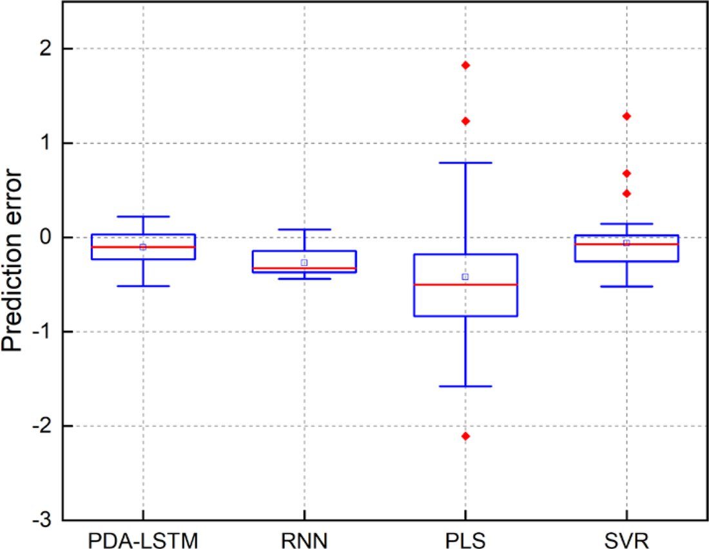

多阶段双注意力 LSTM 工业质量预测（PDA-LSTM）Multi-stage Dual-attention LSTM for Industrial Quality Prediction (PDA-LSTM)
针对注塑等多阶段、非线性工业过程的产品质量难以提前预测的问题，提出"先按工艺阶段分段、再为每段建独立的双注意力 LSTM 模型"的 PDA-LSTM 方法，在提升预测精度的同时还能指出关键变量与关键时间点，兼具精度与可解释性。For hard-to-predict quality in multi-stage, nonlinear processes like injection molding, PDA-LSTM first segments the process by stage, then builds a dual-attention LSTM per stage—improving accuracy while highlighting the key variables and time steps, combining accuracy with interpretability.
背景与痛点Background
传统离线质检存在大时延、无法实时反馈；过程数据呈多阶段、非线性、多变量耦合，常规模型难以充分提取特征。Offline inspection has large delays and no real-time feedback; process data is multi-stage, nonlinear and multivariate-coupled, so ordinary models struggle to extract features.
方法 / 技术路线Method
- 阶段分割：把整段时序按工艺阶段（填充 / 保压 / 冷却等）切分。Stage segmentation: split the time series by process phase (filling / packing / cooling, etc.).
- 分段建模：为每个阶段单独建立模型，捕捉不同阶段的数据模式。Per-stage modeling: a separate model per stage captures each stage's distinct patterns.
- 双注意力：在 LSTM 中引入输入注意力（选关键变量）与时序注意力（选关键时间步）。Dual attention: input attention selects key variables, temporal attention selects key time steps, within the LSTM.
- 验证：数值算例 + 真实注塑过程双重验证，网格搜索选超参。Validation: numerical cases plus a real injection-molding process, with grid-search hyperparameters.
结果与亮点Results & Highlights
- 较已有方法预测精度更高，且能解释关键输入变量与关键时间点（精度 + 可解释性双优）。Higher accuracy than prior methods, while explaining the key input variables and time points (accuracy + interpretability).
- 把"多阶段过程显式建模"与"双注意力机制"结合，既提精度又给工艺机理提示。Combines explicit multi-stage modeling with dual attention—boosting accuracy and offering process-mechanism hints.
图片Figures


本人角色：参与该课题组研究（如方法复现、数据处理与对比实验等可核实环节）；论文一作为课题组其他成员。My role: contributed to this lab research (e.g., reproduction, data processing, comparison experiments); first authorship belongs to other lab members.